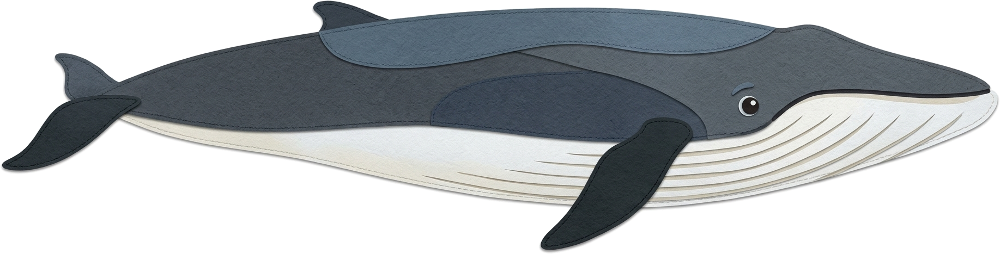
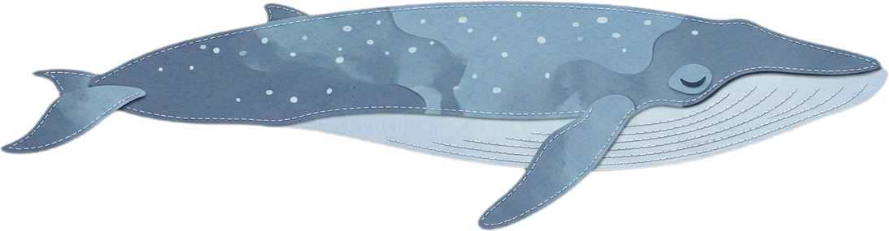
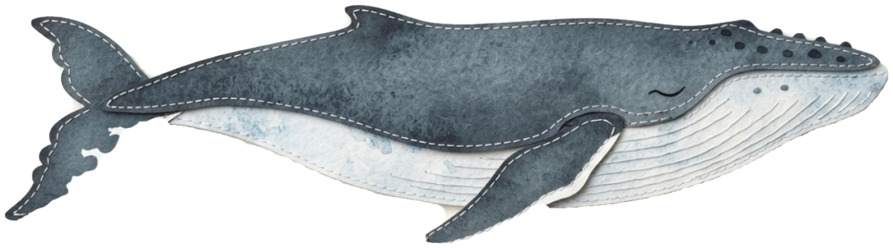
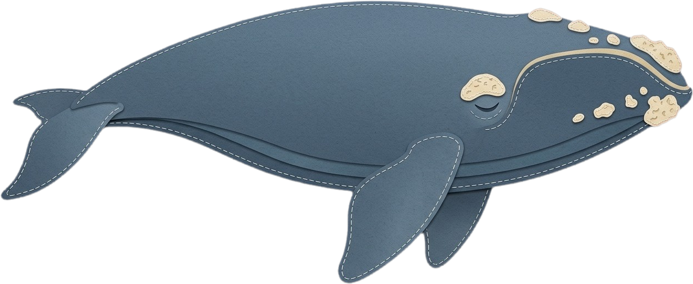
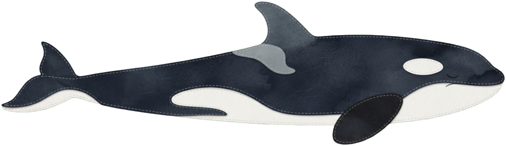

Second-largest animal ever
Fin whale
Long, sleek and fast. Follow it all the way down to the seafloor.
Story ready
Dive in
A gentle guide to whale falls
When a whale's long life ends, its story is only beginning. Pick a whale and follow it down to the deep, where it becomes a home.
Yes, this is about what happens after the end. We promise to be gentle.

Second-largest animal ever
Long, sleek and fast. Follow it all the way down to the seafloor.

Biggest animal ever
It takes a very different road. Two ways its story can go.

The singer
A tangle of crab-trap lines, and a rescue. Two very different endings.

Critically endangered
Stocky, gentle and very rare. Its story has a surprise.

The matriarch
A big family says goodbye, or a mystery turns up on a northern shore.
Every story here is based on real events and published science. See the sources.